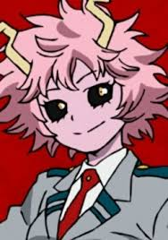

Одна из студенток академии Юэй. Очень весёлая девушка с вечной улыбкой на лице. Легко возбудима и эмоциональна, что заметно по её реакции на любое происходящее явление. Может радоваться как настоящий ребёнок предстоящей поездке, а также активно комментировать действия людей во время наблюдения за их битвами. Также у Мины очень необычная внешность, начиная с рожек на голове, которые сильно мешают во время водных процедур, и заканчивая чёрными склерами глаз и розовой кожей, ставшей такой из-за особенностей её причуды. Чаще всего носит футболки с надписью «Pinky» — её геройский псевдоним.